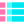

<ion-tabs>

    <ion-tab-bar slot="bottom">
        <ion-tab-button tab="tab1">

            
            <ion-label>Map</ion-label>
        </ion-tab-button>

        <ion-tab-button tab="tab2">
            
            <ion-label>Stats</ion-label>
        </ion-tab-button>

        <ion-tab-button tab="tab3">
            
            <ion-label>List</ion-label>
        </ion-tab-button>
    </ion-tab-bar>

</ion-tabs>